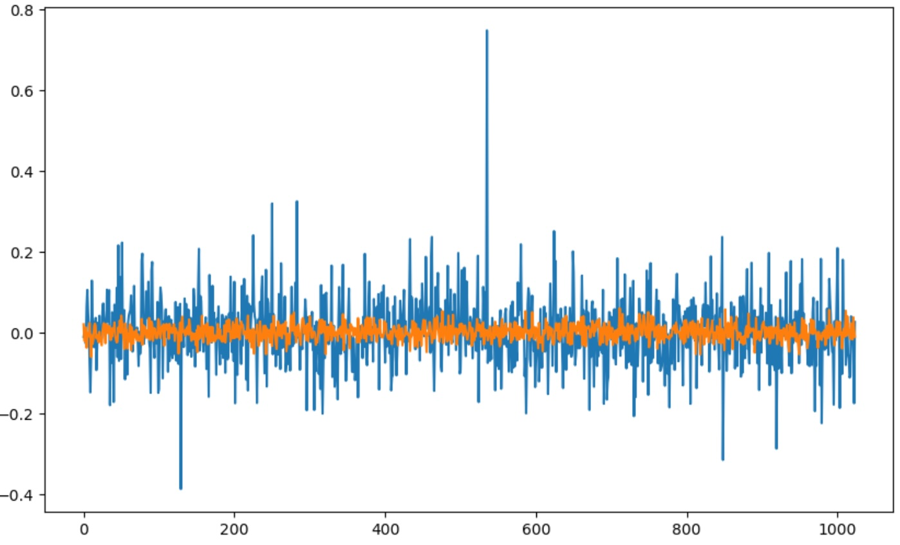
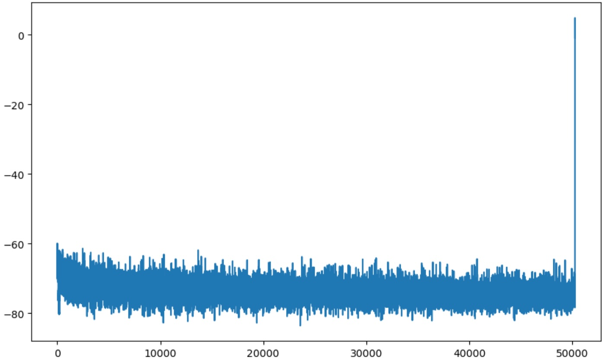
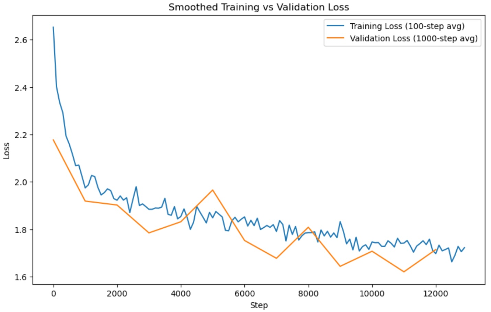

A Step-by-Step Guide for Fine-Tuning GPT-2 Medium From Scratch
Summary
This blog post documents my full process and learnings while fine-tuning a GPT-2 Medium language model from scratch using the Alpaca instruction dataset.
It includes:
- My own dataloader implementation built to work with a from-scratch GPT-2 model following Andrej Karpathy’s Zero-to-Hero series.
- Training a dataset of ~51,000 samples on an NVIDIA A100 for 2 epochs, reaching a validation loss of about 1.7.
- Insights about how I handled special tokens, padding, and attention masking.
- A walkthrough of resizing GPT-2 model layers to accommodate new tokens.
- Example generations before and after fine-tuning to highlight the transformation from base model to assistant-style responses.
All code is available here.
Introduction
The goal of this project was to build and fine-tune a GPT-2 Medium model (355M parameters) from scratch, using a curated dataset with instruction-following examples. I was specifically interested in exploring supervised fine-tuning (SFT) — a key step in taking a generic base model and making it behave like an assistant, similar to ChatGPT.
Why did I take on this task?
- Gap in Karpathy’s Series: Andrej Karpathy’s excellent Zero-to-Hero series walks through training a GPT-2 Small model (124M parameters) from scratch, but it ends before covering how to fine-tune a model.
- Desire for Deep Understanding: I noticed most tutorials and notebooks rely heavily on HuggingFace and PyTorch Dataloaders. While convenient, they abstract away too much. I wanted to learn what was happening under the hood by building things myself.
- Curiosity About LLMs in Practice: Fine-tuning is the bridge from a generic internet text generator to a helpful chatbot. I wanted to understand what happens when you go from pretraining on raw data to post-training on structured, goal-oriented prompts.
This post is meant to largely record what I’ve learned and serve as a reference for my future self.
Understanding Pretraining
Pretraining a large language model means teaching it to predict the next token in a sequence. This is done by feeding it massive amounts of text and updating its parameters based on how well it guesses the next word or token.
Think of the model as a black box: - Input: One or more tokens. - Output: A probability distribution over the entire vocabulary (e.g., 50,256 tokens for GPT-2).
Example
Input: "The cat sat on the" → Output: A vector of 50,256 probabilities. The token "mat." should have a high probability (e.g., 0.98). This makes the model essentially a giant classifier, where the “classes” are the vocabulary tokens.
The model is trained to reduce its prediction error by calculating a loss. The most common loss function used is cross-entropy, which compares the predicted distribution to the correct token (expressed as a one-hot encoded vector).
Why Cross Entropy?
Cross-entropy gives us a scalar value that reflects how similar two probability distributions are — in our case: The model’s predicted distribution: This is the output of the model after applying a softmax over the logits. It’s a probability distribution over the entire vocabulary.
For example, if the vocabulary size is 50,000, this will be a vector of 50,000 values that sum to 1.0. Each value represents the model’s confidence that a specific token is the correct next token. The target distribution: This is a one-hot encoded vector representing the actual correct token. All values are 0 except for a 1.0 at the index of the correct token.
Cross-entropy loss compares these two distributions by computing the negative log probability that the model assigned to the correct token. In mathematical terms, if the model assigns a probability of 0.98 to the correct token, the loss is:
Loss = -log(0.98) ≈ 0.0202
This is a very low loss, meaning the model was highly confident and correct. If the model is guessing randomly — meaning it assigns equal probability to all tokens — then each token gets a probability of 1/50,000. In that case:
Loss = -log(1/50000) ≈ 10.82
That would be expected from an untrained model. On the other hand, a well-trained model might assign around 1/3 probability to the correct token on average for unseen data:
Loss = -log(1/3) ≈ 1.1
So, the closer the predicted distribution is to the one-hot target, the lower the loss. Cross-entropy rewards the model for confidently predicting the correct token and penalizes it for being confidently wrong. It’s a simple yet powerful way to guide the model’s learning.
What is Post-Training?
Post training has a few categories but we will do “Supervised fine tuning” which amounts to taking the pretrained network, throwing away the old data corpus it trained on, and doing a much lighter weight training on a unique dataset with many step-by-step examples in the desired form of a response.\
These datasets are highly specialized to force the network to take on the personality of the training documents, all while keeping its structural understanding of the language from its pretraining. Meaning, we can take the internet document completer we got from pretraining and gently mold it into an assistant style chat bot that expects questions or directions, responds with an answer, and waits for another prompt.
Post training datasets are highly specialized and often proprietary. This is how companies like Scale AI get introduced. When you ask ChatGPT a question, and it responds in a standardized way (e.g., repeats the question, provides steps in how it approaches them, presents the steps, and a summary of its decision/recommendation), it’s because the training documents took on that shape.
Dataset: Alpaca
The dataset I used for SFT is the Alpaca dataset released by Stanford. It contains 51,000 prompt-completion pairs created using GPT-3.5.
I initially tried SQuAD but found it lacking because the completions were short and the context thin. Alpaca’s responses were more complete and better suited for modeling assistant-style behavior.
Preprocessing the Dataset
The original Alpaca file is a .json array. I wanted to convert it into .jsonl format for easier line-by-line parsing. I also combined instruction and input fields when both are present.
import json
wget https://raw.githubusercontent.com/tatsu-lab/stanford_alpaca/main/alpaca_data.json
with open("datasets/alpaca_data.json", "r") as f_in, open("datasets/alpaca_data.jsonl", "w") as f_out:
data = json.load(f_in)
for item in data:
temp = {}
if item['input']:
temp['prompt'] = f"{item['instruction']}\n\n{item['input']}"
else:
temp['prompt'] = item['instruction']
temp['completion'] = item['output']
json.dump(temp, f_out)
f_out.write('\n')
Special Tokens and Dataloader
We now need to introduce special tokens which I found to be the most interesting part of this exercise:
If you recall from above, a pretrained base model will just generate into infinity unless handled or prompted explicitly. A critical way how ChatGPT formats, introduces tool use, and knows when the LLMs generation is complete is through special tokens.
For example, our original vocabulary (now more precisely) of 50,256 tokens does not have the notion of an “end of statement” token, but we can introduce it during fine-tuning and train it, so that generations can end once that token is surfaced (note: the GPT2 tokenizer does include an <|endoftext|> token but it’s not used in this implementation). We can also introduce tokens that represent when the prompt begins, when the prompt ends/answer begins, and when the answer ends. Ultimately these become a type of markup in the training document similar to HTML/XML tags.
As a note, this is also how the LLM knows how to perform a search, or to construct python code, and many other magical experiences: It’s done by introducing special tokens, and having training documents teach the network when to use the documents. For example, a ‘<|SEARCH|>’ token could be introduced that will teach the network to surface the token to construct a Google query, in which an application will perform these, send all the results back to the LLM to interpret, and append it into the original user request.
We can introduce our special tokens when we initialize the data loader like so:
from transformers import GPT2Tokenizer
class QADataLoader:
def __init__(self, filepath, max_length=512, shuffle=True):
self.tokenizer = GPT2Tokenizer.from_pretrained("gpt2")
self.max_length = max_length
self.shuffle = shuffle
self.tokenizer.add_special_tokens({
"bos_token": "<BOS>",
"eos_token": "<EOS>",
"sep_token": "<SEP>",
"pad_token": "<PAD>"
})
self.special_tokens = {
"<BOS>": self.tokenizer.encode("<BOS>")[0],
"<SEP>": self.tokenizer.encode("<SEP>")[0],
"<EOS>": self.tokenizer.encode("<EOS>")[0],
"<PAD>": self.tokenizer.encode("<PAD>")[0]
}
self.samples = []
with open(filepath, 'r') as f:
for line in f:
item = json.loads(line.strip())
q, a = item["prompt"], item["completion"]
tokens = self.encode_sample(q, a)
if len(tokens["input_ids"]) <= self.max_length:
self.samples.append(tokens)
n = int(len(self.samples) * 0.9)
self.train_data = self.samples[:n]
self.val_data = self.samples[n:]
GPT2Tokenizer has a method add_special_tokens() which supports introducing key/value pairs as you need. I also saved these in a self.special_tokens attribute for easy reference later.
We load the training set into self.samples and split them into self.train_data and self.val_data with a 90%/10% split. These aren’t randomized first, so the validation will consistently be the last 10% of the dataset.
We also call encode_sample() when reading the datafile which does the heavy lifting for encoding and formatting our inputs and labels:
def encode_sample(self, question, answer):
q_tokens = self.tokenizer.encode(question)
a_tokens = self.tokenizer.encode(answer)
input_ids = (
[self.special_tokens["<BOS>"]] +
q_tokens +
[self.special_tokens["<SEP>"]] +
a_tokens +
[self.special_tokens["<EOS>"]]
)
label_ids = input_ids[1:] + [-100] # Shift labels rightward by one to line up the labels
ignore_length = len(q_tokens) + 1 # To account for q_token length and the <SEP> special token. Note the shift to the right above accounted for <BOS>
label_ids[:ignore_length] = [-100] * ignore_length
return {"input_ids": input_ids, "label_ids": label_ids}
Note that input_ids now takes the shape of our question/answer format where we are marking up the text with our special tokens including
Some important callouts in how label_ids is treated:
- We stagger the label_ids to reflect how we want Cross Entropy to handle our predictions and labels.
- We mask the question portion of the label_ids with -100 to force the network to only calculate loss for how well it’s predicting the answer portion. This is important because we don’t want the network to care about the question. Otherwise, if we did, we may find that the behavior of the network is such that when we ask it a question, it replies with a version of the same question followed by an answer (instead of the answer only).
Next, we introduce get_batch():
def get_batch(self, batch_size, split):
data = self.train_data if split == 'train' else self.val_data
if self.shuffle:
batch = random.sample(data, batch_size)
else:
batch = data[:batch_size]
max_len = max(len(sample["input_ids"]) for sample in batch)
input_ids_batch = []
label_ids_batch = []
attention_mask_batch = []
for sample in batch:
pad_len = max_len - len(sample["input_ids"])
input_ids = sample["input_ids"] + [self.special_tokens["<PAD>"]] * pad_len
label_ids = sample["label_ids"] + [-100] * pad_len
attention_mask = [1] * len(sample["input_ids"]) + [0] * pad_len
input_ids_batch.append(input_ids)
label_ids_batch.append(label_ids)
attention_mask_batch.append(attention_mask)
input_ids_batch = torch.tensor(input_ids_batch)
label_ids_batch = torch.tensor(label_ids_batch)
attention_mask_batch = torch.tensor(attention_mask_batch)
return input_ids_batch, label_ids_batch, attention_mask_batch
Some notes on get_batch():
- Unlike pretraining, where you’ll typically have a uniform sliding window (where the length is your context window) across a massive data corpus where all words have been concatenated together, with post training, our samples have various lengths. While that’s the case, we still want to batch samples into the network for efficiency. What happens if we want batch_size=4 and the length of each samples input/label pairs are different? The solution is we pad them with another special token
in a way that we’ll always look for the max length (max_len) of the sample in the batch and pad the other samples to match that length. This creates tensors where each batch of B x T will have a length of T that differ batch to batch while each sample within a batch will have the same length. - Attention masking: this is unique to fine tuning in which we want our self-attention within the transformer to ignore padded tokens. This is important because we don’t want meaningless tokens like paddings to communicate with the others, since the token only exists due to the dynamic length nature of the samples described above. A way we tune this out is passing attention_mask through the forward pass of the model down into the attention mechanism, and removing any padded tokens in our inputs by having softmax ignore them, similar to how causal masking is done. For example, in our CausalSelfAttention class:
# apply causal mask
att = att.masked_fill(self.bias[:, :, :T, :T] == 0, float('-inf'))
# apply padding mask if needed
if attention_mask is not None:
attention_mask = attention_mask[:, None, None, :] # (B, T) --> (B, 1, 1, T)
att = att.masked_fill(attention_mask == 0, float('-inf'))
After we apply our casual mask, if at attention_mask is passed, we simply convert any 0’s into negative infinity such that softmax removes it as candidate probabilities. There is some clever tensor manipulation to account for the 4 dimensional batch and number of attention head permutations via attention_mask = attention_mask[:, None, None, :].
Layer Resizing and Initialization
This was the biggest learning experience for me where the importance of initialization became clear.
If you recall, our original GPT2 vocabulary size was 50,256, but we introduced 4 new special tokens. Without resizing, our network has no knowledge of the new tokens introduced and once the tokenizer returns one of these, we’ll get an out of range error once the token is passed to our embedding layer.
It’s worth calling out the two layers that are most impacted when introducing special tokens: the token embedding layer and the final project/linear layer that converts the computation from the hidden states onto our vocabulary distribution. The rest of the network remains in terms of size but these two layers need to be adjusted.
Specifically, we’ll introduce 4 new N dimensional matrices that represent these tokens where N is our embedding dimension. For GPT2 Medium, our embedding dimension is 1024, so each token will now have 1024 parameters in the embedding and projection layers, which all need to be trained.
def resize_token_embeddings_and_tie_weights(self, new_vocab_size):
old_weight = self.transformer.wte.weight.data
old_vocab_size, n_embd = old_weight.shape # Get current size
assert new_vocab_size > old_vocab_size, f"New vocab size is not larger than current vocab size"
# Create new embedding layer and copy weights
self.transformer.wte = nn.Embedding(new_vocab_size, n_embd)
self.transformer.wte.weight.data[:old_vocab_size] = old_weight
# nn.init.normal_(self.transformer.wte.weight.data[old_vocab_size:], mean=0.0, std=0.02)
# Comment this out to illustrate bad initialization
with torch.no_grad():
average = self.transformer.wte.weight[:old_vocab_size].mean(dim=0) # Average of all embeddings across rows (vocab_size, n_embd) --> (n_embd)
self.transformer.wte.weight.data[old_vocab_size:] = average
# Create new lm_head layer
self.lm_head = nn.Linear(n_embd, new_vocab_size, bias=False)
# Tie weights
self.lm_head.weight = self.transformer.wte.weight
print(f"Model resized {model.transformer.wte} and {model.lm_head} layers to {new_vocab_size}")
After we resize, we have the issue of initialization. Ultimately what I learned is that as soon as you introduce these without careful handling, you throw the entire model out of distribution because the parameter values force the network to produce logits substantially greater than anything else and thus softmax spits out confidence for these tokens over and over again. You’ll see this very cleanly by generating text before and after the resizing:
query="Donald John Trump (born June 14, 1946) is an American politician, media personality, and businessman who is the 47th president of the United States."
model = GPT(GPTConfig())
model = model.from_pretrained('gpt2-medium')
model.generate(query=query, max_length=50, device='cpu', tokenizer=tokenizer)
Before:
Donald John Trump (born June 14, 1946) is an American politician, media personality, and businessman who is the 47th president of the United States. He served as the 43rd president of the United States from January 20, 2017, until January
After:
Donald John Trump (born June 14, 1946) is an American politician, media personality, and businessman who is the 47th president of the United States.<SEP><EOS><SEP><SEP><SEP><SEP><SEP><SEP><BOS><SEP><SEP><SEP><SEP><SEP><SEP><SEP><SEP><SEP><SEP>
What’s happening is our newly initialized tokens (even when using torch.nn.init.normal_) have a much tighter variance than what other tokens have learned through training. We can see that by comparing the first token (representing ‘.’) and the last token (our special token for n_embd parameters.
import matplotlib.pyplot as plt
import numpy as np
weights0 = model.lm_head.weight.data[0]
weights1 = model.lm_head.weight.data[-1]
plt.figure(figsize=(10,6))
plt.plot(range(len(weights0)), weights0)
plt.plot(range(len(weights1)), weights1)
plt.show()

Further, you can see its effect on the logits. Here we are look at the logits for the input of “Hello world”. You’ll see the last 4 values dominate everything else.
x = tokenizer.encode("Hello world")
x = torch.tensor(x)
x = x.unsqueeze(0)
logits, _ = model(x)
logits = logits[:, -1, :]
logits = logits.squeeze(0).data
plt.figure(figsize=(10,6))
plt.plot(range(len(logits)), logits)
plt.show()

Training does not solve it well either, though I did not spend too much going this direction, as presumably tons of computation is spent on trying to force these values down.
I solved this by initializing the special tokens by taking the average values of all other tokens and applying them to each four tokens via:
with torch.no_grad():
average = self.transformer.wte.weight[:old_vocab_size].mean(dim=0) # Average of all embeddings across rows (vocab_size, n_embd) --> (n_embd)
self.transformer.wte.weight.data[old_vocab_size:] = average
This means these four have a much better starting point. And running generations on this network even before training brings it back to previous performance.
That is the bulk of it. The rest of the training was identical to pre training and will be familiar to those that have followed Karparthy’s video series.
There are a few learnings around hyperparameter tunings and what I suspect is intuition after training networks after awhile I’ll highlight:
- The learning rate was very sensitive where the sweet spot for me was 1e-5, having tested between 3e-4 and 1e-6. I didn’t create a learning rate scheduler mostly out of laziness but suspect this would have helped/
- A weight decay of 0.05 worked well
- I ended up adding dropout with a value of 0.2 which also seemed to help
Results
I achieved a loss of about 1.7 on my validation set after 2 epochs with a good trend on both training and validation losses. It makes me think I could have continued training for a bit more.

We can see example generations by loading the model and calling our generation() method:
sft_model = torch.load('model/final.pt', map_location=torch.device('cpu'))
model.load_state_dict(sft_model['model_state_dict'])
model.eval()
model.generate(max_length=200, query="List 5 psychological development milestones for toddlers aged 1-2 years.", device='cpu', tokenizer=tokenizer)
| Query | Before | After |
|---|---|---|
| Given an everyday situation, create a brief story around it Riding the subway | for joy, The world a little little town If these songs are about the same feeling I feel me I am riding up; That feel the same feel I feel I feel I am riding That feel feel like I feel feeling I feel The feelings as soon as I ride up The as soon as I ride up That feeling the feelings ride up that feel get ride ride up I ride up ride ride ride… | One day, I saw that the station seemed to be hopping with people, as if it were bustling with activity. As I got closer, I noticed a group of people milling around in the corner. From the corner of my eye, I noticed a large group of children wearing pink and yellow and waving their hands in the air. I turned my head and saw that a group of young children were walking together in the general direction of the station. I realized that this group of kids were running around with excitement, and that was a magical feeling! I decided to take that fun moment and run outside and join them. I followed their directions to some nearby parks and playgrounds, and soon found myself being chased by these little animals! I was mesmerized by the energy and joy that they were creating!<EOS> |
| List 5 psychological development milestones for toddlers aged 1-2 years. | The first phase was developmental milestones during the period where developmental milestones were initiated because it seemed possible for a toddler who is at that age and also it seems that if developmental milestone were initiated by their toddler by being mature age. Some toddlers can begin to feel a little tired and sometimes fall asleep. So for the first was an extra year they were not getting enough sleep and is to get the proper amount of sleep sleep. When first began that stage where one started to get to a stage where they are on their at getting comfortable with and also to have enough amount of sleep that child getting enough of sleep during that time to have sleep by themselves... | 1. Develop an understanding of social boundaries and expectations. 2. Develop the ability to recognize and respond to emotions. 3. Know when to talk to others and when not to. 4. Learn how to express feelings and understand communication. 5. Be able to express empathy and understand feelings of others.<EOS> |
| Describe the typical daily routine of a software engineer who works remotely. | The task for this type of person does not include having children in their mid-range job. We used to think of a good description that of an Engineer that means to be an Engineer. Prony be an Engineer, a part. So, it comes to mean that a software engineer is to an engineer that is to be an engineer. It would mean, that mean a software engineer to that is to be an Engineer, and software engineer a engineer means of an engineer , as engineer. And then engineers in our society mean is to be a software engineers and software engineer in our society is a computer engineer means that is software engineering and , as software engineer who is an engineer which means an engineer computer and , and a computer engineer to be a engineer… | Software engineers typically spend their days working on projects or development tasks, while they also work off-site or in other creative ways. They regularly update client systems, create custom code libraries, and write code that's used in various applications or systems. They also spend a lot of time on software design and development, and create automated test suites for software code. In some cases, they may also build and test new software applications, as well as optimize existing ones.<EOS> |
| Generate 1-2 sentences of dialogue for 2 people discussing their plans for the weekend. | In this form, a friend conversation with 3 people using the 3 names will yield a message for which will be available for conversation within the next 10 people the conversation will complete once the conversation will be completed. If you are using 3 names for your dialogue will use this phrase along with the phrase. If You Are using words for 1 to 3 then phrases of this will use the phrase phrase. If You Are using a couple phrases of this I have included only for that, there this phrase will use both phrase and then phrase phrases phrase… | Person 1: What were your biggest worries about the weekend? Person 2: I'm nervous about my schedule, but I'm also looking forward to going out. I was worried about getting stranded overnight, but I'm excited to try some activities around town. Person 1: How about you? Person 2: I'm planning to take a road trip in early August, so I'll be ready to take this adventure. Person 1: Great! I can't wait to see you there! Person 2: Yeah, I'm sure you'll have a blast.<EOS> |
| Assign a sentiment value (-1 to 1) to the sentence below.\n\nI would never recommend this product to anyone. | <|endoftext|>The first of six titles is set to open to the 2018 9-2019 season. The story, featuring three brothers (VV/Uzo, Ozo/Gabi: Raza, and Mabu/Mabu: Mabu/O/The) who have been assigned the title of the "Abbie" for the "L" in their respective. This title could be considered the strongest game, although it is an under the influence and so it does not count it as the most influential of this season… | <EOS>Negative<EOS> |
| Write a slide title for a presentation about online learning. | Go to your slides. You can also upload the slides by clicking here . You can write your slide now. Your and your slides are ready. Just click here you can edit it. Just click on that now you can edit the. You can edit your How to write your slide? You can create slide presentation, you can make the user have to create slide. You can make the slide ready and you can edit you can edit here today. You can edit to create our slide. Just click here, you can edit slide. Just the slide presentation you are ready. You can add slide to the slide and then you can write our slide you can and slide to this we we here you can, can use to this we you can… | "Online Learning: A Path To Opportunity"<EOS> |
Conclusion
In upcoming posts, I plan to:
- Explore evaluation strategies (e.g., perplexity, BLEU, ROUGE, and human feedback).
- Host the model for inference using tools like Gradio, FastAPI, or Hugging Face Spaces.
You can find the full source code and updates on the GitHub Repo.